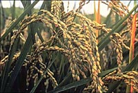

Rice is not grown in Saskatchewan because of an unfavorable climate. We should know all about it, however,
since the crop rivals wheat as
the most important food crop for human consumption.
Rice is grown in large quantities in the USA in southern states such as Arkansas.
Rice is a member of the grass family, and as such, exhibits traits common to other cereals.
The grains of rice vary and are categorized as slender, long, medium or short.
Other types or rice include aromatic and sweet.
Plants vary in height from 40 to 700 cm (16 to 275 inches). Rice is characterized as a semi-aquatic crop, although some varieties have adapted to grow well in in dryland conditions.
Cultivated rice is of two types; African or Oriental. The most common is that of species Oroyza
sativa (Oriental) with the probable countries of origin being South China to East India. Records show it being grown in China as early as 2800 B.C.
Rice is grown on all continents except Antarctica, mainly in warmer areas. Two cultivars of O. sativa are grown; japonica
and indica.
Comparison of Rice Types
| Japonica |
Indica |
- grown in the subtropics
- short stature
- high yielding grains
- cold tolerant
- susceptible to disease and insects
|
- suitable for the tropics
- tall stature
- low-medium yielding
grains
- lacks cold tolerance
- disease and insect resistant
|
Rice is also divided into lowland and
upland types; lowland rice is adapted to grow in standing water and upland rice is grown under a number of conditions.
What is so good about rice?
Rice is second only to wheat production
as the leading food crop of the world. It is very adaptable as it can be grown in varying altitudes; from sea level to well over 3000 meters above. The optimum temperatures for growing are 21 - 38oC during the 18 week long growing
period
How is it used?
Rice is a staple food for over half
of the world's population, providing approximately one-quarter of all
the calories consumed by humans worldwide. The primary use of rice is for human food,
(grain, flour, oil, wine, beer) but
it's products are also used for livestock feeds, construction,
mulch, fuel, rope, and a number of other industrial products.
The type of rice chosen in cooking particular recipes
is important as the properties of the cooked product vary greatly:
- Long Grain Rice -
Long, slender kernel, 4 times longer that it is wide.
Cooked grains are separate, light and fluffy. Often the choice of main course rice dishes.
- Medium Grain Rice -
Kernel is 2 to 3 times longer that it is wide.
Cooked grains are moist, tender and slightly clingy.
- Short Grain Rice - The kernel is almost round or a very slight oval in shape.
Cooked grains stick together. Often used in rice puddings or soups.
- Aromatic Rice -
Some rice varieties have natural aroma and flavor resembling popcorn.
- Sweet Rice -
An opaque white grain. Cooked grains are very sticky.
Nutritional Value
The protein content of rice is less
than that of wheat or maize, and it is low in lysine (an essential amino acid necessary for building proteins). As further processing of rice is carried out, more nutrients are lost. Brown
rice (whole grain rice), which has only lost the indigestible outer hull, is the most nutritious form of rice. Further processing
(polishing) results in white rice, which has lost the bran and
the germ as well as the hull. White rice is easier to store, and is quicker to cook than whole grain rice, but is much lower
in protein and minerals. Converted (parboiled) rice has been treated with steam to force nutrients into the kernel before the polishing process takes place. It is intermediate between brown
and white rice in nutritional value.
Where is it produced?
Rice is one of the commonly raised and consumed cereals in tropical and sub-tropical areas,
especially in regions where populations are high and economies are poor. Rice is grown on all continents (except Antarctica), mainly in warmer
areas. Rice is commonly consumed locally; almost 96% of rice is eaten in the country which it is grown.
How much do we produce?
Cultivated rice is not produced in
Saskatchewan, but an expanding industry of wild rice does exist. Wild rice grows in shallow waters along the shores of some rivers
and lakes of central and northern areas of the province.
How is it produced?
Before planting, a seedbed is prepared by disking
and plowing to a depth of 10 to 15 centimetres. Manure, sewage, or chemical fertilizer is applied, and the surface is smoothed.
- To produce upland rice, 28-78 kg/hectare
of kernels may be broadcast sown, or drilled. It may be grown without irrigation. Weeding and harvesting are the same as for most cereal crops.
- Lowland rice is grown in fields divided
by half-meter high levees which hold water at a desired depth. Growing the rice in water dramatically increases yields, while
controlling weeds. Terrain should be smooth, but sloped slightly
to facilitate drainage. Seeding rates for lowland rice usually
vary between 78 to 112 kg/ha, although they may be much lower
or higher depending on conditions. Seeds may be planted directly in
the field, or transplanted from a flooded nursery when seedlings
are a month old. Transplanting allows the producer to use less
irrigation water, and allows a greater number of crops to be taken off the field (2-3 per year). Water is usually drained away 10
to 15 days before harvest.
Rice can be harvested by hand with
a sickle, or mechanically with a combine or binder thresher. Harvested rice must be dried (usually in pits) from a moisture
content of 18-27% (content for a maximum harvest) after harvesting
to 12-14% to reduce spoilage during storage. The rice is then threshed by trampling or with manual implements.
|